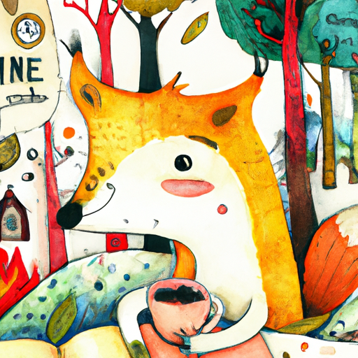
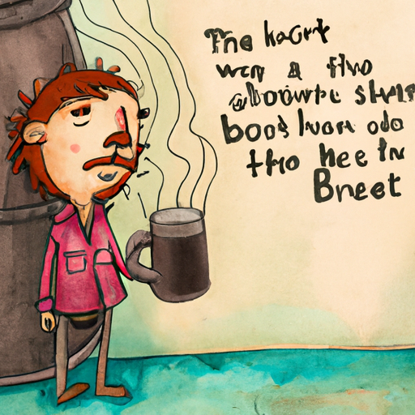
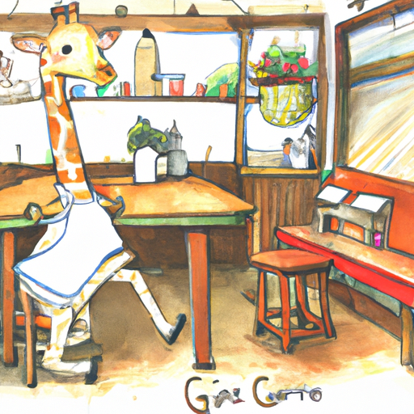
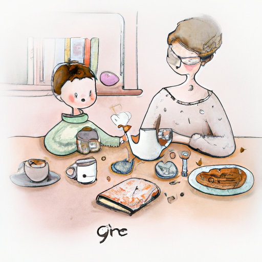
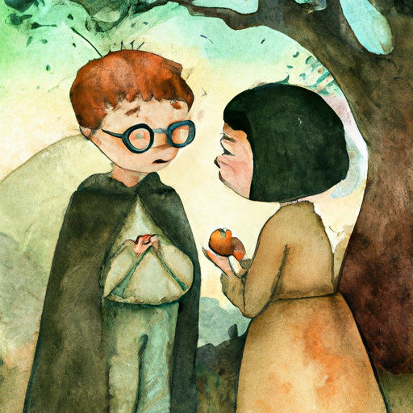
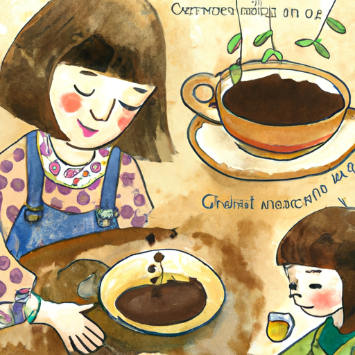
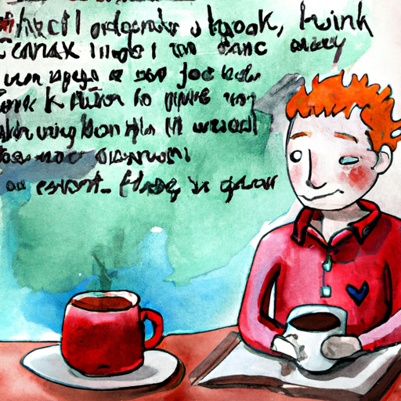
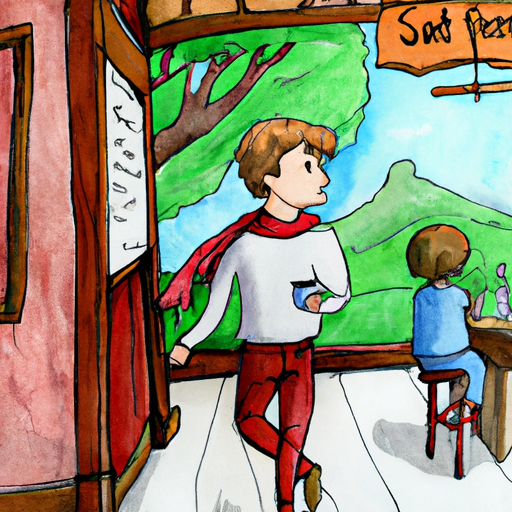
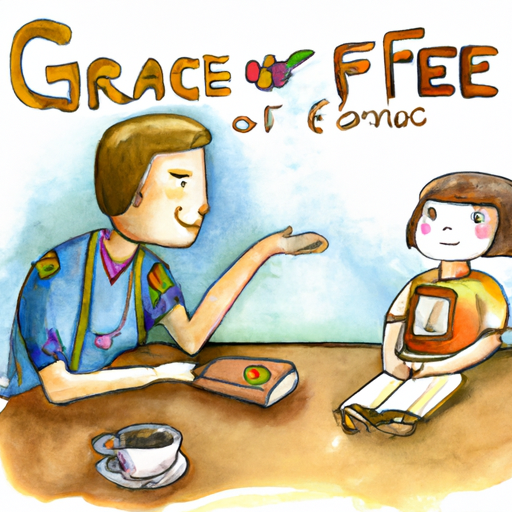
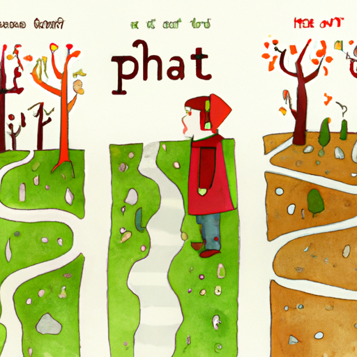

Once upon a time, in the heart of the forest, lived a fox named Finn who had an insatiable love for coffee.
He would only drink the finest brews and seek out the best beans.
One day, while searching for a rare blend, Finn stumbled upon a small café run by a very humble giraffe named Grace.
Despite her simple setup, Grace served the most delicious, heartwarming coffee Finn had ever tasted.
Intrigued, Finn approached Grace and asked her secret.
She explained that it was not about the fancy equipment or expensive beans, but rather the love and care she put into each cup.
Suddenly, Finn's perspective on coffee changed, understanding that true taste comes from the heart.
As Finn left the café, he saw two diverging paths in front of him.
Should Finn open his own café and share Grace's humble coffee philosophy with others, or should he embark on a journey to find the rarest coffee bean in the world, hoping to learn more about the magical flavors of different regions?
What path should Finn choose?
